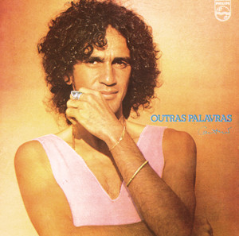
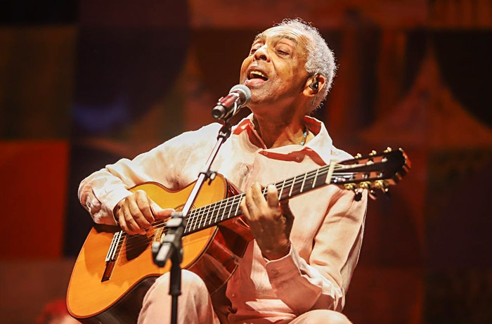
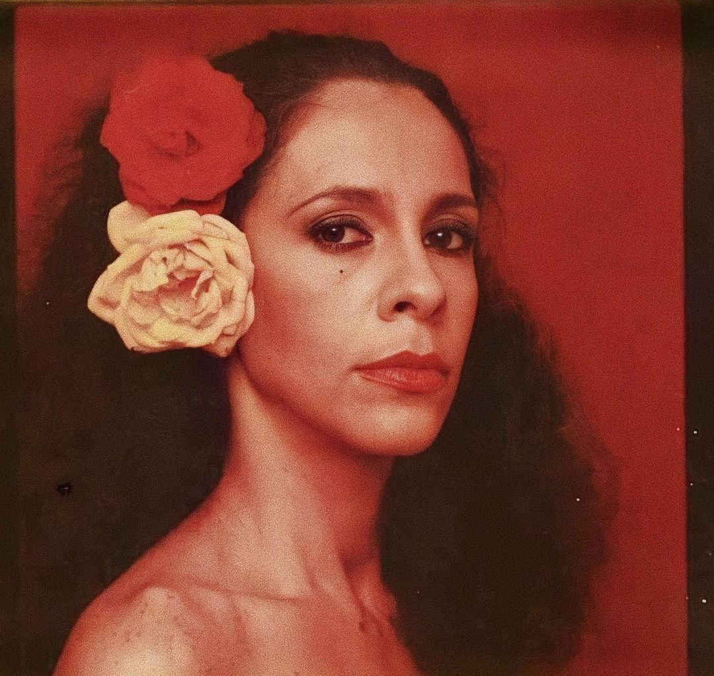

Alguns dos Principais Compositores da MPB
Chico Buarque
Chico Buarque foi (e ainda é) um dos nomes mais importantes da MPB. Ele se destacou como cantor, compositor, escritor e dramaturgo, sendo conhecido por suas críticas sociais e posicionamento político, especialmente durante a ditadura militar. Suas músicas misturam samba, bossa nova e etc, com temas que vão do amor à resistência. Canções Notáveis:
|
Caetano VelosoFoi um dos criadores do movimento Tropicalista, que misturou música brasileira com rock e elementos internacionais. Suas letras são poéticas, políticas e inovadoras. Influenciou gerações com sua arte e sua coragem em tempos de repressão. Canções Notáveis:
|
Gilberto GilOutra figura chave da Tropicália, Gilberto Gil é celebrado por sua complexidade rítmica, temas espirituais e incorporação de elementos afro-brasileiros. Ele tem uma discografia vasta e diversa. Também foi Ministro da Cultura e é reconhecido internacionalmente. Canções Notáveis:
|
Rita LeeRita Lee foi um dos grandes nomes do rock brasileiro e uma figura marcante dentro da MPB. Ficou conhecida por seu estilo irreverente, letras bem-humoradas e atitude libertária. Começou com os Mutantes, grupo ligado ao Tropicalismo, e depois seguiu carreira solo com grande sucesso. É considerada um ícone feminino da música brasileira. Canções Notáveis:
|
Elis Regina
Elis Regina foi uma das maiores cantoras da MPB. Conhecida pela voz poderosa e interpretação intensa, ela deu nova vida às canções que interpretava. Teve papel importante na valorização da música brasileira e também se posicionou politicamente durante a ditadura. É considerada uma das vozes mais marcantes do país. Interpretações Notáveis:
|
Gal CostaConhecido por sua extensão vocal única e composições profundamente emocionais, frequentemente explorando temas de natureza, infância e justiça social. Ele é uma figura central no movimento Clube da Esquina. Canções Notáveis:
|
Ouça Alguns Exemplos!
Chico Buarque - ConstruçãoEscrita em 1971, ela trata de alienação, exploração do trabalhador e desumanização da vida urbana. Ouvir no YouTube |
Caetano Veloso - SozinhoCriada em 1998, trata solidão, autoconhecimento e a dificuldade de se abrir novamente para o amor depois de uma decepção. Ouvir no YouTube |
Gilberto Gil - PalcoPublicada em 1981, a canção celebra a arte, a música e a vida como espetáculo, onde o cantor transforma o mundo em um grande palco. Ouvir no YouTube |
Rita Lee - Mania de VocêEscrita em 1979, é uma canção que fala sobre o sentimento de apaixonar-se intensamente e a sensação de que essa paixão vira um “vício”.. Ouvir no YouTube |
Elis Regina - Águas De MarçoFoi publicada em 1972, é uma canção que traz uma poética reflexão sobre o ciclo da vida, usando imagens do cotidiano e da natureza para representar o fim e recomeço. Ouvir no YouTube |
Gal Costa - Palavras No CorpoLançada em 2018, é uma canção que explora a intensidade da paixão, destacando como as palavras podem ter um impacto profundo e físico em uma pessoa. Ouvir no YouTube |